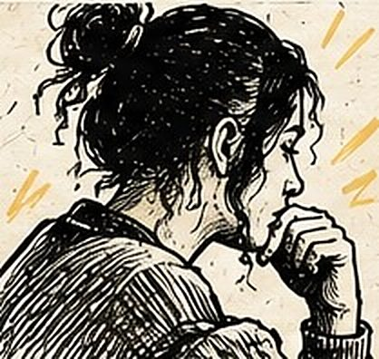
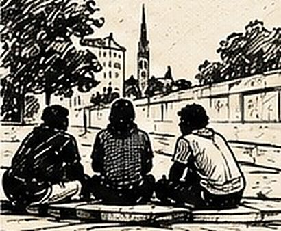

Quatre ans de slam à la Ferme Merlet, un CEID
Tout est parti d'un atelier de deux heures à L'Accordeur. Quatre ans plus tard, la Ferme Merlet, un CEID, reconduit chaque année un parcours de 20 h, et la restitution est devenue une scène slam ouverte qui attire de plus en plus de monde.
Auteur : Esope · Intervenants slam : Esope
Ce projet a commencé par un atelier slam de deux heures, à L'Accordeur, avec des résidents de la Ferme Merlet, un CEID. Quatre ans plus tard, la structure me confie chaque année un parcours de 20 h directement sur place, et la restitution qui clôturait cet atelier ponctuel est devenue une scène slam ouverte à tous, qui attire aujourd'hui un public de plus en plus large.
Le contexte : un atelier ponctuel qui a fait mouche
Rien ne prévoyait, au départ, que cet atelier dure plus d'une après-midi. Le public a particulièrement accroché au slam et au format, et la Ferme Merlet a fini par commander un parcours de 20 h directement dans ses murs. Le public est adulte, sensible et très attachant — un public qui n'a souvent pas eu l'occasion de mettre des mots sur son propre parcours, encore moins de les dire debout devant les autres.

Le déroulement : un projet qui s’est installé dans la durée
Le parcours s'est progressivement installé dans le temps, jusqu'à donner naissance à plusieurs sous-projets et expériences autour du slam.
- Une soirée slam à Bordeaux, où certains participants sont montés sur scène en dehors du cadre de la structure.
- Un tournoi de slam en Bretagne, qui a fait voyager le projet bien au-delà de la Gironde.
- Un Happening Slam dans la salle BOMA, un format différent pour continuer à faire vivre le collectif.
- Une scène slam ouverte à L'Accordeur, à Saint-Denis-de-Pile — le prolongement le plus important, sur lequel je reviens plus bas.
Ces ateliers sont très orientés vers l'expression personnelle. On y travaille notamment autour de la vie, du passé, de l'entourage et des problématiques liées aux addictions. Le slam sert ici de véritable outil pour mettre des mots sur son expérience et reprendre confiance dans sa capacité à écrire et à prendre la parole.

Les techniques travaillées
- Les techniques d'écriture et les rimes.
- Les images et les métaphores.
- La manière de parler de soi à travers l'écriture.
- L'éloquence et la prise de parole.
- La gestion du stress et la confiance en soi.
- L'acceptation du regard des autres sur ce que l'on écrit.
L'un des aspects importants du projet est que tout le monde joue le jeu, y compris l'équipe encadrante. Cela permet de créer un véritable espace de confiance et de cohésion : personne, dans la salle, n'est simplement là pour observer.
Ce que les participants ont travaillé
Au-delà de l'écriture et de la scène, le rendez-vous régulier créé par les ateliers est lui-même important : il permet de retrouver les participants, de maintenir un lien, de créer une dynamique collective et de redonner progressivement confiance dans sa propre parole, mais aussi dans celle des autres.
Le moment marquant : une restitution devenue scène ouverte
L'un des prolongements les plus importants de ce partenariat est la restitution organisée à L'Accordeur, à Saint-Denis-de-Pile. Elle a progressivement dépassé le cadre d'une simple présentation de fin d'atelier pour devenir une véritable scène slam ouverte à tous. Elle attire aujourd'hui de plus en plus de monde et est devenue un rendez-vous important du slam dans la région.
Ce que ce projet a permis d’explorer
L'intérêt de ce projet tient dans son chemin : un atelier ponctuel de deux heures a donné naissance à un partenariat de plusieurs années, puis à tout un écosystème autour du slam, jusqu'à créer une scène ouverte qui attire aujourd'hui un public de plus en plus large. Si votre structure de santé ou médico-sociale envisage un premier atelier, même court, on peut en discuter le format.